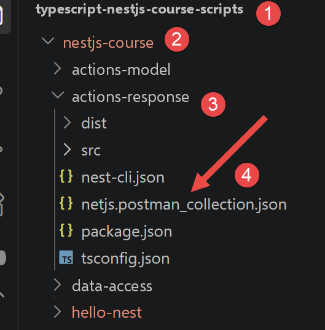
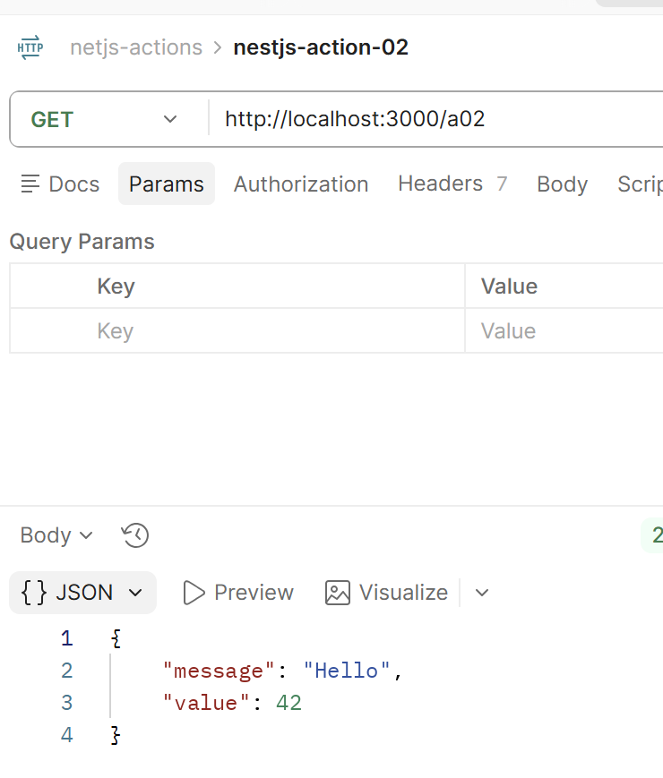
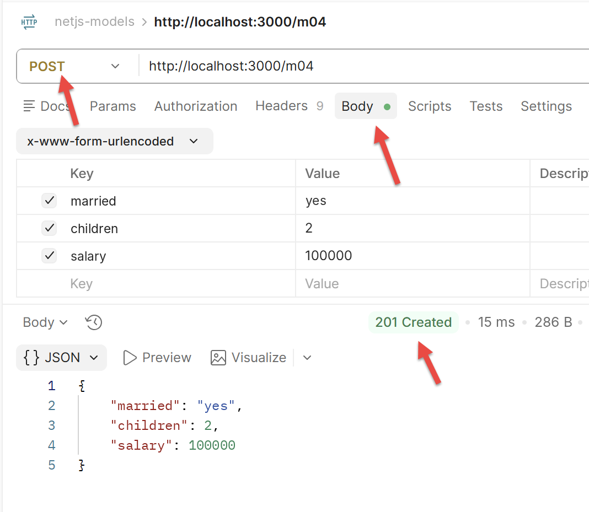
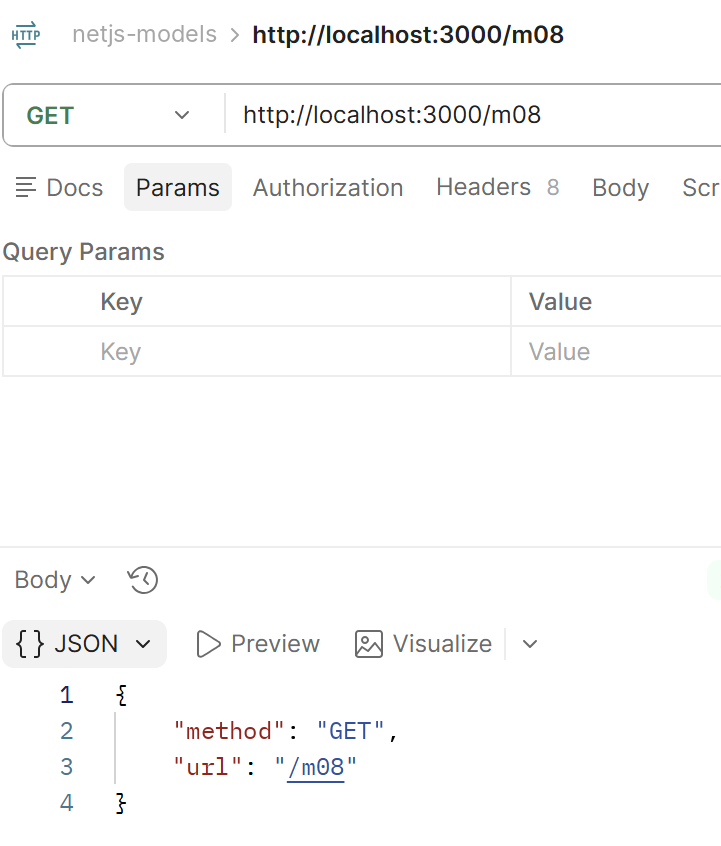
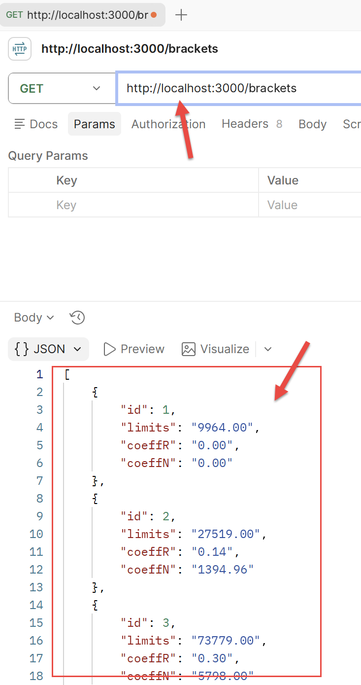

8. Einführung in das Web-Framework NestJS
8.1. Quellen
Dieser Kurs stützt sich auf die folgenden Quellen:
- die offizielle NestJS-Website: https://nestjs.com und ihre Dokumentation https://docs.nestjs.com;
- das GitHub-Repository des Frameworks: https://github.com/nestjs/nest;
8.2. Verwendete Werkzeuge
- Node.js, LTS-Version (18 oder höher), und sein Paketmanager npm;
- die CLI von NestJS (@nestjs/cli), ein Kommandozeilenwerkzeug, das die Struktur eines neuen Projekts erstellt, anhand einer vorgefertigten Vorlage Dateien (Controller, Services, Module usw.) generiert und den Entwicklungsserver startet;
- ein Code-Editor: Visual Studio Code mit der TypeScript-Erweiterung;
- ein (HTTP-)Client zum Testen der bereitgestellten Endpunkte (URL): Postman oder einfach der Befehl
curl; - ein MySQL-Datenbankserver.
8.3. Die Rolle von NestJS in einer Webanwendung
NestJS ist ein in TypeScript geschriebenes Node.js-Framework, das für den Bau der Serverseite einer Webanwendung konzipiert ist – meist einer REST-API (JSON), manchmal einer GraphQL- oder einer Echtzeitanwendung (WebSockets). Es erfindet die Verarbeitung des HTTP-Protokolls nicht neu: Standardmäßig stützt es sich auf Express, ein rudimentäreres Node.js-Framework, das rohe HTTP-Anfragen entgegennimmt und beantwortet (Fastify ist eine mögliche Alternative zu Express). NestJS setzt darauf auf und bietet eine Code-Organisation, die weder Node.js noch Express von sich aus vorgeben: Aufteilung in Module, Controller und Services; Dependency Injection; Dekoratoren ...
Seine Architektur ist stark von Angular inspiriert (Dekoratoren, Module, Dependency Injection). Die allgemeine Idee ist die eines einzigen Einstiegspunkts, der alle Anfragen der Anwendung entgegennimmt und sie dann je nach angeforderter Aktion an den passenden Controller weiterleitet; jeder Controller stützt sich seinerseits auf Services, die die Geschäftslogik und den Datenzugriff übernehmen, statt diesen Code direkt im Controller zu schreiben.
NestJS ist in erster Linie darauf ausgelegt, JSON-Antworten zu erzeugen: Standardmäßig wird alles, was eine Controller-Methode zurückgibt, automatisch in JSON umgewandelt und ohne besondere Konfiguration an den Client gesendet – das werden wir bei der ersten Aktion des Miniprojekts weiter unten überprüfen. Serverseitiges Rendering von HTML-Views (mit Handlebars, EJS oder Pug) ist weiterhin möglich – wir werden es etwas später auch tatsächlich einsetzen –, aber es ist eine Option und kein Standardverhalten.
8.4. Das MVC-Entwicklungsmodell von NestJS
Drei Konzepte bilden die Struktur einer NestJS-Anwendung:
- Module (Dekorator @Module): Ein Modul fasst eine Reihe zusammengehöriger Funktionen zusammen – es deklariert, welche Controller und Services zu ihm gehören, von welchen anderen Modulen es abhängt und was es anderen zur Verfügung stellt. Eine NestJS-Anwendung geht immer von einem Wurzelmodul aus, AppModule, das alle anderen Module des Projekts zusammenführt;
- Controller (Dekorator @Controller): Ein Controller ist der Einstiegspunkt der Anwendung – eine Klasse, in der jede Methode HTTP-Anfragen zu einer bestimmten URL entgegennimmt und eine Antwort an den Client zurückgibt;
- Provider (der Dekorator @Injectable): Ein Provider ist eine gewöhnliche Klasse, die typischerweise für die Geschäftslogik oder den Datenzugriff zuständig ist und die NestJS automatisch erzeugen und jedem Controller oder Service, der sie benötigt, bereitstellen (d. h. „injizieren“) kann.
In der Praxis deklariert eine Klasse, die einen Provider benötigt, diesen einfach als Parameter ihres Konstruktors – NestJS erzeugt die erforderliche Instanz und übergibt sie automatisch, ohne dass Sie jemals selbst new schreiben müssen: Dies nennt man konstruktorbasierte Dependency Injection, ein Vorgehen, das in NestJS fast immer verwendet wird. Ein konkretes Beispiel dafür sehen wir in der folgenden Zeile.
8.4.1. Ein erstes NestJS-Projekt
8.4.1.1. Das Demoprojekt
Ein sehr kleines Projekt mit einer einzigen Aktion [/hello], um die Werkzeuge kennenzulernen.

8.4.1.2. Projekteinrichtung
Dieses Projekt ist bereits fertig im heruntergeladenen Skriptverzeichnis enthalten – es handelt sich um den Ordner nestjs-course/hello-nest/ aus dem Screenshot oben (Beschriftung [3]), in dem sich bereits alle Dateien befinden. Sie müssen also nichts erstellen: Öffnen Sie einfach diesen vorhandenen Ordner in VSCode (führen Sie npm install aus, falls noch nicht geschehen – siehe die Einleitung dieses Dokuments) und fahren Sie direkt mit dem nächsten Abschnitt fort.
Hinweis: Die drei folgenden Befehle dienen nur dazu, an einem anderen Ort ein neues NestJS-Projekt von Grund auf zu erzeugen – so wurde der Ordner hello-nest/ ursprünglich einmalig angelegt. Führen Sie sie auf keinen Fall im bereits vorhandenen Ordner hello-nest/ aus: Der Befehl nest new hello-nest würde dort einen verschachtelten Unterordner hello-nest/hello-nest/ erzeugen – das ist hier nicht gewollt, und der Fehler passiert leicht.
Zur Information: Wenn Sie dieses Projekt selbst von Grund auf neu erstellen möchten (in einem leeren Ordner außerhalb der Verzeichnisstruktur des Kurses), wurde es folgendermaßen erzeugt:
Dieser Befehl erzeugt ein Projekt mit den folgenden wesentlichen Dateien:
8.4.1.3. Die Architektur einer NestJS-Anwendung
Allein diese vier Dateien veranschaulichen die MVC-Architektur von NestJS: einen Einstiegspunkt (main.ts), ein Wurzelmodul (app.module.ts), einen Controller (app.controller.ts) und einen Service (app.service.ts).
8.4.1.4. Der Controller C
src/app.service.ts
Kommentieren wir diesen Code:
- Zeile 1: [// src/app.service.ts] – ein einfacher Kommentar, der die betreffende Datei angibt, ohne Auswirkung auf die Ausführung – nützlich, um den Überblick zu behalten, wenn mehrere Dateien nacheinander gezeigt werden.
- Zeile 2: [import { Injectable } from '@nestjs/common';] – wie in Standard-TypeScript importieren wir jedes verwendete Element ausdrücklich, hier aus @nestjs/common, dem Modul, das die meisten Dekoratoren und Hilfsklassen von NestJS enthält.
- Zeile 4: [@Injectable()] – ein Dekorator ist eine Annotation, die unmittelbar über einer Klasse, einer Methode oder einem Parameter in TypeScript steht (eingeleitet durch das Symbol @) und deren Verhalten ändert oder erweitert, ohne den Code selbst zu ändern – der Mechanismus, auf dem praktisch das gesamte Vokabular von NestJS beruht. @Injectable() kennzeichnet diese Klasse als Provider: NestJS erzeugt sie selbstständig und stellt sie automatisch jeder anderen Klasse bereit, die sie in ihrem Konstruktor anfordert, ohne dass Sie jemals new AppService() schreiben müssen.
- Zeile 5: [export class AppService {] – eine gewöhnliche TypeScript-Klasse, die exportiert wird, damit sie anderswo (hier im Controller) importiert werden kann – an dieser Stelle ist, abgesehen vom vorangehenden Dekorator, nichts NestJS-spezifisch.
- Zeile 6: [ getHello(): string {] – eine gewöhnliche Methode; : string deklariert den Typ des Rückgabewerts – eine Besonderheit von TypeScript, die es in JavaScript nicht gibt.
- Zeile 7: [ return 'Hello, world!';] – der tatsächlich zurückgegebene Inhalt – vorerst eine einfache feste Zeichenkette.
src/app.controller.ts
Kommentieren wir diesen Code:
- Zeile 1: [// src/app.controller.ts] – dieselbe Anmerkung wie oben: ein Kommentar ohne Auswirkung auf die Ausführung.
- Zeile 2: [import { Controller, Get } from '@nestjs/common';] – importiert die beiden später verwendeten Dekoratoren: @Controller (für die Klasse) und @Get (für eine Methode).
- Zeile 3: [import { AppService } from './app.service';] – importiert den soeben definierten Service, damit er unten in den Konstruktor injiziert werden kann.
- Zeile 5: [@Controller()] – @Controller() dekoriert die folgende Klasse und macht sie zu einem Controller: NestJS leitet an ihn die HTTP-Anfragen weiter, die zu seinen Routen gehören. Das Argument in den Klammern ist ein optionales Präfix , das allen Routen der Klasse vorangestellt wird – mit @Controller('api') würde eine Methode, die mit @Get('x') dekoriert ist, auf /api/x antworten. Hier ist das Präfix leer: Die weiter unten definierte Route „hello“ antwortet daher direkt auf /hello.
- Zeile 6: [export class AppController {] – die Controller-Klasse, üblicherweise benannt <Name>Controller.
- Zeile 7: [ constructor(private readonly appService: AppService) {}] – der Konstruktor deklariert einen Parameter appService vom Typ AppService, dem der TypeScript-Modifikator private readonly vorangestellt ist, der ihn in einer einzigen Zeile deklariert UND als Eigenschaft der Instanz registriert (this.appService). NestJS erkennt, dass der Controller einen AppService benötigt, erzeugt eine Instanz davon (eine einzige, die von der gesamten Anwendung gemeinsam genutzt wird) und stellt sie hier automatisch bereit: Das ist die konstruktorbasierte Dependency Injection von vorhin – Sie schreiben nie
new AppService(). - Zeile 9: [ @Get('hello')] – @Get('hello') verknüpft die folgende Methode mit der HTTP-Route GET /hello: Dieser Dekorator macht die Aktion unter der testbaren Adresse http://localhost:3000/hello erreichbar, sobald der Server läuft. Für die anderen HTTP-Verben gibt es Dekoratoren, die denselben Zweck erfüllen – @Post(), @Put(), @Delete(), @Patch() –, die wir im nächsten Kapitel ausführlich behandeln.
- Zeile 10: [ hello(): string {] – der Methodenname
hellohat keinen inhärenten Bezug zur Route: NestJS ruft die Methode ausschließlich deshalb auf, weil sie direkt darüber mit@Getdekoriert ist. Ihr einen Namen zu geben, der die Aktion widerspiegelt, ist lediglich eine Konvention zugunsten der Lesbarkeit. - Zeile 11: [ return this.appService.getHello();] – der Controller delegiert die Arbeit an den injizierten Service, statt die Antwort selbst zu programmieren: Er bleibt eine einfache Routing-Schicht, während die Geschäftslogik im Service liegt.
src/app.module.ts
Kommentieren wir diesen Code:
- Zeile 1: [// src/app.module.ts] – wieder ein Kommentar zur Identifizierung, ohne Auswirkung auf die Ausführung.
- Zeile 2: [import { Module } from '@nestjs/common';] – importiert den Dekorator @Module, der in Zeile 6 verwendet wird.
- Zeile 6: [@Module({] – @Module({...}) dekoriert die folgende Klasse und macht sie zu einem Modul: Es fasst einen zusammengehörigen Teil der Anwendung zusammen und deklariert in dem als Argument übergebenen Objekt, woraus er besteht. Möglich sind vier Eigenschaften (hier verwenden wir nur zwei): controllers (die von diesem Modul bereitgestellten Controller), providers (die von diesem Modul bereitgestellten Services, die innerhalb des Moduls injiziert werden können), imports (die anderen Module, von denen dieses abhängt) und exports (die Provider, die dieses Modul den Modulen zur Verfügung stellt, die es importieren).
- Zeile 7: [ controllers: [AppController],] – deklariert, dass AppController, der weiter oben definiert wurde, zu diesem Modul gehört – ohne diese Deklaration würde NestJS diesen Controller ignorieren, und seine Routen würden auf keine Anfrage antworten.
- Zeile 8: [ providers: [AppService],] – deklariert entsprechend, dass AppService zu diesem Modul gehört und damit für die Dependency Injection verfügbar ist – dieses Array ermöglicht es dem Controller, ihn in seinem Konstruktor zu erhalten.
- Zeile 10: [export class AppModule {}] – das Wurzelmodul der Anwendung, üblicherweise benannt AppModule: Mit diesem startet main.ts den Server.
8.4.1.5. Ausführung
Wenn Sie http://localhost:3000/hello in einem Browser öffnen, erhalten Sie die Antwort „Hello, world!“. Der Dekorator @Get('hello') ordnet die Methode hello() dem Endpunkt /hello in der URL zu; NestJS sendet die zurückgegebene Zeichenkette unverändert. Standardmäßig startet npm run start:dev den Server auf Port 3000 – diesen Port sehen wir in allen Beispielen der folgenden Kapitel.
8.4.1.6. Fazit
Das Trio aus Controller, Service und Modul, das wir soeben geschrieben haben, bildet das Rückgrat jeder NestJS-Anwendung; diese Struktur sehen wir in den folgenden Kapiteln und in der Fallstudie in Kapitel 6 in größerem Maßstab wieder.
8.4.2. Die MVC-Architektur von NestJS
8.4.2.1. Die Module
Der Dekorator @Module akzeptiert vier Haupteigenschaften: imports (die anderen Module, von denen dieses Modul abhängt), controllers (die Controller, die es bereitstellt), providers (die Services, die es sowohl für sich selbst als auch für die Module, die es importieren, bereitstellt) und exports (die Provider, die es anderen Modulen zur Verfügung stellt). Eine NestJS-Anwendung ist ein Baum von Modulen mit einem Wurzelmodul – AppModule –, das sie beim Start alle zusammenführt, ähnlich wie eine allgemeine Projektübersicht (Leser, die Spring kennen, erkennen darin die Rolle einer zentralen Konfigurationsdatei).
8.4.2.2. Controller
Ein Controller ist eine Klasse, die mit @Controller(prefix) annotiert ist: Er empfängt HTTP-Anfragen und gibt dem Client eine Antwort zurück. Das Präfix, das optional ist, wird allen Routen der Klasse vorangestellt – mit @Controller('users') würde eine Methode, die mit @Get(':id') dekoriert ist, auf /users/:id antworten, nicht auf /:id. Jede Methode des Controllers wird über einen Dekorator, der dem gewünschten Verb entspricht, mit einer Route verknüpft: @Get zum Lesen, @Post zum Erstellen, @Put zum Ersetzen, @Patch zum teilweisen Ändern, @Delete zum Löschen. Der Pfad einer Route kann variable Segmente enthalten, die durch : eingeleitet werden, wie in @Get('users/:id') (:id erfasst dann den Wert, der sich an dieser Stelle der angeforderten URL befindet). Im nächsten Kapitel gehen wir ausführlich auf die Dekoratoren ein, mit denen sich die in der Anfrage übermittelten Informationen abrufen lassen (@Query, @Param, @Body ...).
8.4.2.3. Provider und Dependency Injection
Eine Klasse, die mit @Injectable() annotiert ist, ist ein Provider: NestJS instanziiert und injiziert ihn automatisch überall dort, wo er in einem Konstruktor angefordert wird, sofern er im Array providers eines Moduls aufgeführt ist (entweder im eigenen oder in dem eines Moduls, das ihn exportiert). Standardmäßig ist ein NestJS-Provider ein Singleton: Beim Start der Anwendung wird eine einzige Instanz erzeugt, die von allen Komponenten, die sie benötigen, gemeinsam genutzt wird – statt für jede Anfrage eine neue Instanz zu erzeugen (Leser, die Spring kennen, erkennen darin das Standardverhalten eines Beans).
8.4.2.4. Zusammenfassender Vergleich mit Spring MVC
Die folgende Tabelle dient nur zur Information: Sie richtet sich an Leser, die bereits mit Spring MVC vertraut sind und ihr vorhandenes Wissen nutzen möchten. Sie ist für das Verständnis des restlichen Kurses nicht erforderlich – alle hier aufgeführten NestJS-Begriffe werden in diesem und in den folgenden Kapiteln unabhängig von Spring erklärt.
- @Controller (Spring) ↔ @Controller (NestJS)
- @GetMapping / @RequestMapping (Spring) ↔ @Get(), @Post()... (NestJS)
- @RequestParam (Spring) ↔ @Query() (NestJS)
- @PathVariable (Spring) ↔ @Param() (NestJS)
- @RequestBody (Spring) ↔ @Body() (NestJS)
- @Service / @Repository + @Autowired (Spring) ↔ @Injectable() + Konstruktorinjektion (NestJS)
- Konfigurationsdatei / Component Scanning (Spring) ↔ @Module (NestJS)
- ResponseEntity<T> (Spring) ↔ direkt zurückgegebenes Objekt oder @Res() für volle Kontrolle (NestJS)
8.5. Aktionen: die Antwort

Dieses Kapitel untersucht Aktion für Aktion die verschiedenen Möglichkeiten, wie ein NestJS-Controller die an den Client gesendete Antwort aufbauen kann. Jede Aktion lässt sich mit curl oder Postman in einem neuen Projekt testen, das mit nest new actions-response erstellt wurde; wie im vorherigen Kapitel startet npm run start:dev den Server auf Port 3000, sodass alle URLs der folgenden Aktionen die Form http://localhost:3000/... haben. Alle Aktionen dieses Kapitels sind Methoden eines einzigen Controllers, AppController, der mit @Controller() ohne Präfix annotiert ist – wie im vorherigen Kapitel liefert daher das Argument in den Klammern von @Get(...) jeder Aktion direkt deren URL.
8.5.1. Komponenten der NestJS-Anwendung
Die Anwendung besteht aus drei Dateien (siehe 4 oben)
8.5.1.1. src/app.controller.ts
Diese Datei vereint sechs Methoden in einer einzigen Klasse, AppController, wobei die Dekoratoren (Header, HttpCode, Redirect, Res), die von einer oder mehreren dieser Methoden verwendet werden, am Anfang der Datei zusammengefasst sind.
Auf diese sechs Methoden kommen wir etwas später zurück.
8.5.1.2. src/app.module.ts
Kommentieren wir diesen Code:
- Zeile 5: @Module({ – anders als beim Wurzelmodul des Projekts hello-nest aus dem vorherigen Kapitel gibt es hier keine Eigenschaft
providers: Dieses Projekt definiert keine Services; die gesamte Logik steckt in den Methoden des Controllers selbst. - Zeile 6: controllers: [AppController], – die einzige erforderliche Deklaration: Sie ordnet AppController – und damit seine sechs Routen – diesem Modul zu.
8.5.1.3. src/main.ts
Der Einstiegspunkt bleibt in allen Projekten gleich: Er verwendet exakt dasselbe bootstrap() -Grundgerüst wie im Projekt hello-nest aus dem vorherigen Kapitel, das die Anwendung aus dem Wurzelmodul erstellt und dann auf Port 3000 lauscht.
8.5.1.4. [/a01]: Text zurückgeben
Kommentieren wir diesen Code:
- Zeile 1: [@Get('a01')] – @Get('a01') verknüpft diese Methode mit der Route GET /a01 – wie im vorherigen Kapitel verbindet dieser Dekorator eine URL mit einer Methode. Diese Aktion ist daher unter http://localhost:3000/a01 erreichbar, sobald der Server gestartet ist (npm run start:dev).
- Zeile 2: [a01(): string {] – der Methodenname a01 hat keinen inhärenten Bezug zur Route: NestJS ruft die Methode ausschließlich deshalb auf, weil sie direkt darüber mit @Get dekoriert ist. Sie genauso zu benennen wie die Aktion, wie in diesem ganzen Kapitel geschehen, ist lediglich eine Konvention zugunsten der Lesbarkeit, damit sich die zu einer URL gehörende Aktion leicht finden lässt.
- Zeile 3: [ return 'Hello from the action [/a01]';] – die Methode gibt einfach eine Zeichenkette zurück.
NestJS sendet die zurückgegebene Zeichenkette unverändert an den Client, mit einem Content-Type-Header, der auf text/html gesetzt ist.
8.5.1.5. [/a02]: Ein Objekt zurückgeben, das automatisch in JSON serialisiert wird
Kommentieren wir diesen Code:
- Zeile 1: [@Get('a02')] – erreichbar unter http://localhost:3000/a02.
- Zeile 2: [a02(): object {] – diesmal deklariert die Methode, dass sie ein object statt eines string zurückgibt – dieser Rückgabetyp ändert das Verhalten von NestJS; siehe unten.
- Zeile 3: [ return { message: 'Hello', value: 42 };] – ein JavaScript/TypeScript-Objektliteral mit zwei Eigenschaften.
Sobald eine Methode ein Objekt (oder ein Array) zurückgibt, serialisiert NestJS es automatisch in JSON und setzt den Content-Type-Header auf: application/json – Sie müssen nichts Besonderes tun, um eine JSON-Antwort zu erhalten, anders als bei der Zeichenkette [/a01], die reinen Text liefert.
8.5.1.6. [/a03]: Den HTTP-Statuscode ändern
Gehen wir diesen Code Schritt für Schritt durch:
- Zeile 1: [import { Get, HttpCode } from '@nestjs/common';] – importiert die beiden unten verwendeten Dekoratoren.
- Zeile 3: [@Get('a03')] – erreichbar unter http://localhost:3000/a03. Standardmäßig antwortet eine @Get-Aktion mit dem HTTP-Statuscode 200 (die dreistellige Zahl, die mit jeder Antwort zurückgegeben wird und dem Client mitteilt, ob die Anfrage erfolgreich war – 200: Erfolg, 404: Ressource nicht gefunden, 500: Serverfehler usw.).
- Zeile 4: [@HttpCode(201)] – @HttpCode(201) erzwingt ausdrücklich den von dieser Aktion zurückgegebenen Statuscode, hier 201 (Created) statt des Standardwerts 200 – eine rein didaktische Entscheidung, um den Dekorator zu veranschaulichen, der normalerweise einer Aktion vorbehalten wäre, die tatsächlich eine Ressource erstellt (typischerweise ein @Post statt eines @Get). Ein gewöhnlicher Browser zeigt den empfangenen Statuscode nicht an; zur Überprüfung verwenden Sie Postman oder den Reiter „Netzwerk“ in den Entwicklertools.
8.5.1.7. [/a04]: Einen HTTP-Header hinzufügen
Kommentieren wir diesen Code:
- Zeile 1: [import { Get, Header } from '@nestjs/common';] – importiert die beiden unten verwendeten Dekoratoren.
- Zeile 3: [@Get('a04')] – erreichbar unter http://localhost:3000/a04.
- Zeile 4: [@Header('X-My-Header', 'a-value')] – ein Header (HTTP) ist eine zusätzliche Information, die zusammen mit der Antwort gesendet wird, getrennt vom Nachrichtenrumpf – der oben erwähnte Content-Type ist ein Standardbeispiel dafür. @Header(name, value) fügt hier einen benutzerdefinierten Header hinzu, X-My-Header, mit dem Wert a-value. Wie beim Statuscode zeigt ein gewöhnlicher Browser empfangene Header standardmäßig nicht an: Zur Ansicht benötigen Sie Postman oder die Entwicklertools.
8.5.1.8. [/a05]: Den Client umleiten
Kommentieren wir diesen Code:
- Zeile 1: [import { Get, Redirect } from '@nestjs/common';] – importiert die beiden unten verwendeten Dekoratoren.
- Zeile 3: [@Get('a05')] – erreichbar unter http://localhost:3000/a05 – beim Öffnen in einem Browser leitet diese URL sofort weiter auf https://nestjs.com.
- Zeile 4: [@Redirect('https://nestjs.com', 302)] – @Redirect(url, code) bewirkt, dass die Aktion mit einer HTTP-Weiterleitung auf url antwortet, mit dem Statuscode code (302, Found, ist der Standardwert, wenn dieses zweite Argument weggelassen wird) – der Browser folgt dieser Weiterleitung automatisch, ohne Zutun des Benutzers.
- Zeile 5: [a05() {}] – der Methodenrumpf ist leer: Die ganze Arbeit erledigt der Dekorator @Redirect direkt darüber; die Methode selbst hat nichts zurückzugeben.
8.5.1.9. [/a06]: Direkter Zugriff auf das Express-Response-Objekt
Kommentieren wir diesen Code:
- Zeile 1: [import { Get, Res } from '@nestjs/common';] – importiert zusätzlich zum bereits bekannten @Res-Dekorator, der in Zeile 5 verwendet wird, auch @Get.
- Zeile 2: [import { Response } from 'express';] – importiert den TypeScript-Typ Response von Express (dem HTTP-Server, auf den sich NestJS standardmäßig stützt; siehe das Kapitel „Einführung“), der zur Typisierung des Parameters unten dient.
- Zeile 4: [@Get('a06')] – erreichbar unter http://localhost:3000/a06.
- Zeile 5: [a06(@Res() res: Response): void {] – @Res() übergibt das rohe Express-Response-Objekt direkt als Argument an die Methode, hier mit dem Namen res. Das ist das Gegenteil von [/a01]/[/a02]: Statt NestJS die Antwort aus dem Rückgabewert aufbauen zu lassen, übernimmt der Code hier die volle Kontrolle über die gesamte HTTP-Antwort.
- Zeile 6: [ res.status(200).json({ response: 'built by hand' });] – ruft direkt die Methoden der Express-API auf – status(200) setzt den Statuscode, json({...}) serialisiert das Objekt in JSON und sendet die Antwort tatsächlich ab (diese beiden Schritte laufen normalerweise automatisch ab, wie in [/a02]).
Hinweis: Sobald @Res() verwendet wird, muss der Code der Methode die Antwort ausdrücklich senden (res.send(...), res.json(...) ...): NestJS greift nicht mehr automatisch ein, auch nicht bei allem, was in den vorherigen Aktionen automatisch ablief (JSON-Serialisierung, Standardstatuscode usw.). Diese Technik verwendet der Front-Controller in unserer Fallstudie (Kapitel 6), um die volle Kontrolle über die Antwort zu behalten, ganz wie es die Response-Klassen des portierten PHP-Servers taten.
Die NestJS-Anwendung ausführen

Geben Sie in einem Terminal im Projektstammverzeichnis den folgenden Befehl ein:
Sie erhalten die folgende Antwort:
8.5.2. Postman-Tests
Für Tests mit Postman können Sie die folgende Anfragensammlung verwenden:

Hier sind die Postman-Tests für die sechs Aktionen:
8.5.2.1. Aktion a01

8.5.2.2. Aktion a02

8.5.2.3. Aktion a04

So sehen Sie den vom Server gesendeten Header:

8.5.2.4. Aktion a05

In [1] sehen Sie die Website, auf die der Postman-Client umgeleitet wurde.
8.5.2.5. Aktion a06

8.5.3. Fazit
NestJS bietet also zwei Ansätze, um eine Antwort aufzubauen: Entweder überlässt man dem Framework den automatischen Aufbau anhand des von der Methode zurückgegebenen Werts – der häufigste Fall, veranschaulicht durch [/a01] bis [/a05] –, oder man übernimmt mit @Res() die volle, manuelle Kontrolle über die HTTP-Antwort, um den Preis, alles selbst verwalten zu müssen ([/a06]).
8.6. Aktionen: das Modell

Dieses Kapitel ist das Gegenstück zum vorherigen: Im Mittelpunkt steht nicht mehr der Aufbau der Antwort, sondern das Abrufen der Informationen, die in der Anfrage des Clients übermittelt werden (URL-Parameter, gesendeter Rumpf, Header usw.). Wie im vorherigen Kapitel sind alle Aktionen Methoden desselben Controllers AppController , der mit @Controller() ohne Präfix annotiert ist, und der Server lauscht standardmäßig auf Port 3000 – die folgenden URLs haben daher alle die Form http://localhost:3000/...
8.6.1. Die Komponenten der NestJS-Anwendung
Sehen wir uns die Dateien (siehe 4 oben), aus denen das Projekt actions-model besteht, genauer an.
8.6.1.1. src/app.controller.ts
Eine einzige Klasse, AppController, enthält acht Methoden, mit allen Dekoratoren (@Query, @Param, @Body, @Headers, @Session, @Req) und dem CalculationDto (siehe [/m04] und [/m05]), die von einer oder mehreren davon verwendet werden. Auf diese Methoden gehen wir gleich ein.
8.6.1.2. src/app.module.ts
Derselbe Hinweis wie im vorherigen Kapitel: Auch hier gibt es keine providers , da dieses Projekt keine eigenständigen Services definiert.
8.6.1.3. src/main.ts
Kommentieren wir diesen Code:
- Zeile 9: app.use(session({ secret: 'xxx', resave: false, saveUninitialized: false })); – installiert die Express-Middleware
express-session– diese Zeile, die hier nur einmal vorkommt und für die gesamte Anwendung gilt, aktiviert den Sitzungszähler aus [/m07]. Das secret dient zum Signieren des Sitzungs-Cookies; in der Produktion muss es aus einer Umgebungsvariablen stammen und darf niemals im Klartext im Code stehen. - Zeilen 10–15: app.useGlobalPipes(new ValidationPipe({ ... })); – deklariert global, für alle Controller der Anwendung, dieselbe ValidationPipe wie die, die lokal auf [/m05] mit @UsePipes angewendet wird. Die beiden Optionen
transform: trueundenableImplicitConversion: trueaktivieren die automatische Typkonvertierung (insbesondere von Zeichenketten in derURLin Zahlen) vor der Validierung.
8.6.1.4. [/m01]: Parameter einer GET-Anfrage
Kommentieren wir diesen Code:
- Zeile 1: [@Get('m01')] – wie im vorherigen Kapitel verknüpft dieser Dekorator die Methode mit der Route GET /m01.
- Zeile 2: [m01(@Query('name') name: string, @Query('age') age: string): object {] – @Query(name) ist ein neuer Dekorator, der diesmal auf einen Methodenparameter angewendet wird und nicht auf die Klasse oder die Methode selbst: Er extrahiert einen Parameter aus dem Query-String (dem Teil der URL nach dem ?, in der Form key=value , getrennt durch &) und stellt ihn direkt als Argument bereit – bereits benannt und typisiert –, ohne dass Sie ihn selbst abrufen müssen. Hier extrahiert @Query('name') den Parameter "name" und weist ihn der Variablen
namezu; Entsprechendes gilt fürage. Diese Aktion lässt sich daher unter http://localhost:3000/m01?name=Serge&age=60 testen, was name = "Serge" und age = "60" zurückgibt (ein Wert aus dem Query-String wird immer als Zeichenkette empfangen, auch wenn er wie eine Zahl aussieht). - Zeile 3: [ return { name, age };] – Kurzschreibweise für { name: name, age: age }: Wenn Eigenschaftsname und Variablenname identisch sind, genügt es, nur den Namen zu schreiben.
8.6.1.5. [/m02]: Elemente einer URL
Kommentieren wir diesen Code:
- Zeile 1: [@Get('m02/:id')] – das :id im Routenpfad ist ein variables Segment (ein Routenparameter): NestJS erfasst, was an dieser bestimmten Stelle der angeforderten URL steht. Eine Anfrage an http://localhost:3000/m02/5 erfasst somit 5; eine Anfrage an /m02/abc würde abc erfassen.
- Zeile 2: [m02(@Param('id') id: string): object {] – @Param(name) ist der komplementäre Dekorator zu @Query, wie in [/m01] gesehen: Während @Query den Query-String liest (nach dem ?), liest @Param ein variables Segment des Pfads selbst (hier: id). @Param('id') injiziert daher den erfassten Wert in die Variable id.
- Zeile 3: [ return { id };] – gibt den empfangenen Wert einfach zurück, verpackt in einem Objekt.
8.6.1.6. [/m03]: Parameter einer POST-Anfrage
Kommentieren wir diesen Code:
- Zeile 1: [@Post('m03')] – @Post() ist der Dekorator, der @Get() für das HTTP-Verb POST entspricht, das normalerweise dazu dient, Daten an den Server zu senden (eine Ressource anlegen, ein Formular absenden usw.), und nicht, um eine einfache URL zu lesen. Anders als die vorherigen Aktionen lässt sich diese nicht einfach durch Eingabe der URL in einen Browser testen (der nur GET-Anfragen stellt): Sie benötigen einen Client, der eine POST-Anfrage senden kann
- Zeile 2: [ m03(@Body() body: any): object {] – @Body() injiziert ohne Argumente diesmal den gesamten Anfragerumpf (anders als @Query/@Param, die jeweils ein einzelnes benanntes Feld lesen);
anyist einTypeScript-Typ, der „beliebiger Typ“ bedeutet und hier verwendet wird, weil für die empfangenen Daten noch kein bestimmtes Format vorgegeben wurde (eine typisierte Version finden Sie in[/m04]). - Zeile 3: [ return body;] – gibt den empfangenen Rumpf unverändert zurück, um zu überprüfen, was gesendet wurde.
Hinweis: Der Anfragerumpf muss mit einem Content-Type gesendet werden, den NestJS verarbeiten kann (application/json oder application/x-www-form-urlencoded): Es ist die body-parser-Middleware – in NestJS standardmäßig aktiviert –, die diesen rohen Rumpf liest und in ein JavaScript-Objekt umwandelt, bevor über @Body() darauf zugegriffen wird. Testen lässt sich das mit Postman oder curl -X POST http://localhost:3000/m03 -H "Content-Type: application/json" -d '{"a":1}'.
8.6.1.7. [/m04]: Die gesendeten Parameter einer Klasse zuordnen
dto/calculation.dto.ts
Kommentieren wir diesen Code:
- Zeile 1: [// dto/calculation.dto.ts] – ein Kommentar zur Kennzeichnung der Datei; ohne Auswirkung auf die Ausführung.
- Zeile 2: [export class CalculationDto {] – eine Klasse, die ausschließlich das Format der erwarteten Daten beschreibt, ohne jede Methode – man nennt dies ein DTO (Data Transfer Object), eine einfache typisierte Datenstruktur, mit der Informationen von einem Teil des Programms an einen anderen übertragen werden (hier vom Client an den Controller).
- Zeile 3: [ married: string;] – eine typisierte Eigenschaft: married muss eine Zeichenkette sein – TypeScript prüft diesen Typ zur Kompilierzeit.
- Zeile 4: [ children: number;] – „children“ muss eine Zahl sein.
- Zeile 5: [ salary: number;] – Das Gehalt muss eine Zahl sein.
Gehen wir diesen Code Schritt für Schritt durch:
- Zeile 1: [@Post('m04')] – derselbe Hinweis wie bei [/m03]: Testen Sie dies mit Postman oder curl, nicht direkt in der Adressleiste eines Browsers.
- Zeile 2: [m04(@Body() data: CalculationDto): CalculationDto {] – weiterhin @Body(), wie in [/m03], aber diesmal ist die Variable
dataals CalculationDto typisiert statt alsany: NestJS wandelt das empfangene JSON automatisch in eine Instanz dieser Klasse mit ihren benannten und typisierten Eigenschaften um (married, children, salary), statt in ein generisches, untypisiertes Objekt – was die Prüfung durch den TypeScript-Compiler und die Autovervollständigung im Editor ermöglicht. Hinweis: In diesem Stadium gibt es weiterhin keine Garantie, dass die empfangenen Daten tatsächlich diesem Format entsprechen (ein Client könnte beliebige Daten senden) – eine echte Validierung finden Sie in[/m05].
8.6.1.8. [/m05]: Das Aktionsmodell validieren
Wir installieren zwei Begleitbibliotheken für NestJS zur Validierung:
dto/calculation.dto.ts
Kommentieren wir diesen Code:
- Zeile 1: [import { IsIn, IsInt, Min } from 'class-validator';] – class-validator ist eine von NestJS unabhängige (aber sehr häufig damit verwendete) Bibliothek, mit der sich Validierungsregeln über Dekoratoren direkt an den Eigenschaften einer Klasse definieren lassen – etwa @IsIn, @IsInt, und Min, die hier importiert werden.
- Zeile 4: [ @IsIn(['yes', 'no'])] – @IsIn([...]) verlangt, dass der Wert der folgenden Eigenschaft (married) Teil der angegebenen Liste ist – hier nur 'yes' oder 'no'; jeder andere Wert wird abgelehnt.
- Zeile 7: [ @IsInt() @Min(0)] – Zwei Dekoratoren können nacheinander auf dieselbe Eigenschaft angewendet werden: @IsInt() verlangt eine ganze Zahl, und @Min(0) verlangt einen Wert größer oder gleich 0 – beide Regeln gelten gemeinsam für „children“.
Kommentieren wir diesen Code:
- Zeile 1: [import { Body, Post, UsePipes, ValidationPipe } from '@nestjs/common';] – importiert zusätzlich zu den bereits bekannten Dekoratoren UsePipes und ValidationPipe
- Zeile 3: [@Post('m05')] – mit Postman oder curl (POST) zu testen, nicht in der Adressleiste eines Browsers.
- Zeile 4: [@UsePipes(new ValidationPipe())] – eine Pipe. In NestJS ist das ein Mechanismus, der sich zwischen die empfangene Anfrage und den Code der Methode schaltet, um Daten zu transformieren oder zu validieren, bevor sie den Controller erreichen. ValidationPipe, von NestJS bereitgestellt, ist die Standard-Validierungspipe: Sie wertet die class-validator-Dekoratoren aus, die auf das DTO angewendet wurden (@IsIn, @IsInt, @Min ...), und lehnt jede Anfrage, deren Daten ihnen nicht entsprechen, automatisch mit einer HTTP-400-Antwort (Bad Request) ab – ohne dass Sie eine einzige
if-Anweisung selbst schreiben müssen. @UsePipes() ist der Dekorator, der eine Pipe für eine bestimmte Methode aktiviert.
Hinweis: Sie können die Validierung auch ein für alle Mal für alle Controller der Anwendung aktivieren, statt Methode für Methode mit @UsePipes(): app.useGlobalPipes(new ValidationPipe()); in main.ts.
8.6.1.9. [/m06]: Auf einen HTTP-Header zugreifen
Kommentieren wir diesen Code:
- Zeile 1: [@Get('m06')] – erreichbar unter http://localhost:3000/m06.
- Zeile 2: [m06(@Headers('user-agent') userAgent: string): object {] – @Headers(name) liest einen bestimmten HTTP-Header der eingehenden Anfrage (im Gegensatz zu @Header(), das im vorherigen Kapitel behandelt wurde und das einen Header hinzufügte zur ausgehenden Antwort – dasselbe Wort mit entgegengesetzter Bedeutung, je nachdem, ob Sie lesen oder schreiben). Hier ruft @Headers('user-agent') den Header User-Agent ab (den Namen des Browsers oder Werkzeugs, das die Anfrage gesendet hat; er wird von jedem Client automatisch mitgeschickt). Ohne Argument würde @Headers() ein Objekt mit allen Headern der Anfrage zurückgeben.
- Zeile 3: [ return { userAgent };] – gibt den gelesenen Wert zurück, verpackt in einem Objekt.
8.6.1.10. [/m07]: Auf die Sitzung zugreifen
main.ts
Kommentieren wir diesen Code:
- Zeile 2: [app.use(session({ secret: 'xxx', resave: false, saveUninitialized: false }));] – app.use(...) registriert eine Express-Middleware – einen Prozess, der für jede eingehende Anfrage ausgeführt wird, bevor sie einen Controller erreicht. Hier richtet die session-Middleware (bereitgestellt von der Bibliothek express-session) die Sitzungsverwaltung für die gesamte Anwendung ein:
secretdient zum Signieren des Sitzungs-Cookies (um Manipulationen zu verhindern), undresavesowiesaveUninitializedsind Optionen, die steuern, wann die Sitzung serverseitig tatsächlich gespeichert wird.
Gehen wir diesen Code Schritt für Schritt durch:
- Zeile 1: [import { Get, Session } from '@nestjs/common';] – importiert den Dekorator @Session
- Zeile 3: [@Get('m07')] – erreichbar unter http://localhost:3000/m07 – wiederholtes Aktualisieren der Seite erhöht den Zähler; sein Wert bleibt serverseitig zwischen den Anfragen erhalten.
- Zeile 4: [m07(@Session() session: Record<string, any>): object {] – eine Sitzung ist ein Speicherbereich, der einem bestimmten Besucher zugeordnet ist und serverseitig über mehrere aufeinanderfolgende Anfragen hinweg aufrechterhalten wird – anders als eine gewöhnliche Variable, die bei jeder neuen Anfrage zurückgesetzt würde. Der Client wird über einen Cookie identifiziert, der eine Sitzungs-ID enthält und den der Browser nach dem Empfang automatisch bei jeder Anfrage mitsendet. @Session() injiziert diesen Speicherbereich direkt als Argument in die Methode.
- Zeile 5: [ session.counter = (session.counter ?? 0) + 1;] – der Operator ?? (Nullish Coalescing) liefert seine rechte Seite nur, wenn die linke Seite null oder undefined ist – hier initialisiert er den Zähler beim allerersten Besuch mit 0, bevor dieser bei jeder weiteren Anfrage um 1 erhöht wird.
- Zeile 6: [ return { counter: session.counter };] – gibt den aktuellen, in der Sitzung gespeicherten Wert des Zählers zurück.
Das ist genau die express-session, die wir in Kapitel 6 verwendet haben, um die Authentifizierung und die Liste der Simulationen für den Steuerberechnungsserver zu speichern.
8.6.1.11. [/m08]: Auf die gesamte Anfrage zugreifen
Gehen wir diesen Code Schritt für Schritt durch:
- Zeile 1: [import { Get, Req } from '@nestjs/common';] – importiert den Dekorator @Req
- Zeile 2: [import { Request } from 'express';] – importiert den von Express bereitgestellten TypeScript-Typ Request, um den Parameter unten zu typisieren.
- Zeile 4: [@Get('m08')] – erreichbar unter http://localhost:3000/m08.
- Zeile 5: [m08(@Req() req: Request): object {] – @Req() injiziert direkt das rohe Express-Request-Objekt samt allem, was es enthält (Methode, URL, Header, Rumpf, Parameter ...), statt jeweils nur eine einzelne Information wie @Query, @Param, @Body, @Headers oder @Session. Auf der Anfrageseite ist das genau das Äquivalent zu dem, was @Res() auf der Antwortseite in [/a06] im vorherigen Kapitel war: weniger Automatisierung durch NestJS, aber voller, uneingeschränkter Zugriff.
- Zeile 6: [ return { method: req.method, url: req.url };] – liest direkt zwei Eigenschaften des Express-Request-Objekts: method (das verwendete HTTP-Verb) und url (der angeforderte Pfad).
Die NestJS-Anwendung ausführen

Geben Sie in einem Terminal im Projektstammverzeichnis den folgenden Befehl ein:
Sie erhalten die folgende Antwort:
8.6.2. Postman-Tests
Für Tests mit Postman können Sie die folgende Anfragensammlung verwenden:

Hier sind die Postman-Tests für die acht Methoden der Anwendung:
8.6.2.1. Aktion m01

8.6.2.2. Aktion m02

8.6.2.3. Aktion m03

8.6.2.4. Aktion m04

8.6.2.5. Aktion m05


8.6.2.6. Aktion m06

8.6.2.7. Aktion m07
Nach 3 Anfragen:

8.6.2.8. Aktion m08

8.6.3. Fazit
@Query, @Param, @Body, @Headers und @Session decken den Großteil der Anforderungen ab; @Req() bleibt für den vollen, uneingeschränkten Zugriff auf die Anfrage verfügbar – diese Option wählt die Aktion [m06] in unserer Fallstudie aus denselben Gründen wie die Aktion [/a06] .
8.7. Datenzugriff: NestJS und Datenbanken
NestJS bietet mehrere Möglichkeiten, auf eine Datenbank zuzugreifen: Im Node-Ökosystem existieren drei Ansätze nebeneinander, vom SQL-nächsten bis zum ORM-nächsten mit dekorierten Entitäten – anders als Spring Data, das Java-Entwicklern einen einzigen Ansatz vorgibt.

8.7.1. Der native Treiber: eine handgeschriebene [DAO]-Schicht
Node stellt für jedes DBMS schlanke Treiber bereit (mysql2 für MySQL, pg für PostgreSQL ...), die SQL direkt zugänglich machen: Sie schreiben die Abfragen selbst, ohne Abstraktionsschicht zwischen Code und Datenbank. So arbeitet die [DAO]-Schicht in unserer Fallstudie: Ein @Injectable()-Service öffnet eine Verbindung und führt explizite SQL-Abfragen aus.

Auszug aus src/model/server-dao.service.ts (Kapitel [case study]):
Kommentieren wir diesen Code:
- Zeile 1: [import mysql from 'mysql2/promise';] – der MySQL/MariaDB-Treiber wird für Node.js importiert (das Paket mysql2); der Unterpfad mysql2/promise stellt die Promise-basierte Variante bereit (die sich somit mit
awaitverwenden lässt) statt der älteren, Callback-basierten Variante; - Zeile 3: [@Injectable()] – dieser Dekorator kennzeichnet die folgende Klasse als NestJS-Provider: eine Klasse, die NestJS selbst instanziieren und in den Konstruktor einer anderen Klasse injizieren kann (hier wird ServerDaoService in einen Aktions-Controller injiziert; siehe das nächste Kapitel) – ohne diesen Dekorator könnte NestJS sie nicht automatisch erzeugen;
- Zeile 6: [const connection = await mysql.createConnection({ ... })] – mysql.createConnection(...) öffnet eine neue Netzwerkverbindung zum MySQL/MariaDB-Server, wobei Host, Datenbank, Benutzername und Passwort direkt als Parameter übergeben werden;
awaithält die Ausführung der Funktion an, bis die Verbindung erfolgreich hergestellt ist; - Zeile 12: [const [brackets] = await connection.query('select ... order by id')] – connection.query(...) führt die als Zeichenkette übergebene SQL-Abfrage aus; die Methode gibt ein Array mit zwei Elementen zurück, von denen das erste (hier per Destrukturierung abgerufen, [brackets]) die gelesenen Zeilen enthält – es wird kein SQL generiert, und es gibt kein objektrelationales Mapping: Genau der geschriebene Text wird an die Datenbank gesendet;
- Zeile 16: [await connection.end();] – die Verbindung wird nach Abschluss des Lesens ausdrücklich geschlossen – beim nativen Treiber liegt die Verwaltung des Verbindungslebenszyklus vollständig beim Code, anders als bei den beiden später vorgestellten ORM-Beispielen.
Hinweis: Dieser Auszug ist in der hier zitierten Form keine eigenständig ausführbare Datei: Die darin verwendeten Bezeichner TaxAdminData und taxAdminData sind in diesem Fragment nicht definiert. Die vollständige, funktionsfähige Datei befindet sich unter src/model/server-dao.service.ts auf dem Server [nestjs-case-study], der im nächsten Kapitel ausführlich untersucht wird; es handelt sich daher nicht um eine zu testende URL, sondern um eine interne Methode, die von der Geschäftsschicht aufgerufen wird.
Dieser Ansatz bietet die volle Kontrolle über das ausgeführte SQL, ohne jede „Magie“ und ohne automatische Abfragegenerierung: Was Sie im Code sehen, wird exakt so an MySQL gesendet (dieselbe Philosophie wie JdbcTemplate in Spring MVC oder wie direkt verwendetes PDO in PHP, für alle, die eine dieser Umgebungen kennen).
8.7.2. TypeORM: das Pendant zu Spring Data JPA
TypeORM ist das am häufigsten zusammen mit NestJS verwendete ORM: Hier werden Tabellen als dekorierte TypeScript-Klassen (die „Entitäten“) definiert, und die Datenbank wird über ein injiziertes Repository abgefragt, ohne in einfachen Fällen SQL-Abfragen schreiben zu müssen (es ist das ORM, das Spring Data JPA / Hibernate konzeptionell am ähnlichsten ist, für alle, die diese Umgebung kennen).
Hinweis: Die folgenden Beispiele stammen aus einem kleinen, vollständigen und lauffähigen NestJS-Projekt (dem zu diesem Kapitel mitgelieferten Ordner typeorm/ ): Es lässt sich kompilieren und läuft unverändert, benötigt aber eine echte MySQL-dbtaxes-2019-Datenbank (erstellt mit dem mitgelieferten SQL-Skript), damit es fehlerfrei antwortet.

8.7.2.1. Modulkonfiguration
Im Wurzelmodul der Anwendung (app.module.ts) wird die Datenbankverbindung einmalig mit TypeOrmModule.forRoot(...) deklariert:
app.module.ts
Kommentieren wir diesen Code:
- Zeile 1: [// app.module.ts] – dieser Kommentar gibt lediglich an, woher das Snippet stammt: Dieser Block, TypeOrmModule.forRoot({...}), ist ein Element der Liste
importsim Wurzelmodul@Module({...})der Anwendung und keine eigenständige Datei; - Zeile 2: [TypeOrmModule.forRoot({ ... })] – forRoot(...) konfiguriert, einmalig für die gesamte Anwendung, die Datenbankverbindung – das Äquivalent zur DataSource , die wir weiter oben bei TypeORM ohne NestJS gesehen haben (Kapitel 2); jedes Modul, das eine bestimmte Entität benötigt, deklariert diese dann einfach mit TypeOrmModule.forFeature(...), wie unten gezeigt;
- Zeile 9: [entities: [Bracket],] – die Liste der Entitätsklassen (hier nur eine: Bracket), die TypeORM kennen muss, um die Zuordnung zwischen den TypeScript-Klassen und den SQL-Tabellen herzustellen;
- Zeile 10: [synchronize: false,] – wenn auf true gesetzt, würde TypeORM das Datenbankschema automatisch an die Entitäten anpassen – nützlich ganz am Anfang eines Projekts, aber gefährlich, sobald eine produktive Datenbank Daten enthält: Wir belassen den Wert hier auf false , wie es bei einer bestehenden Datenbank grundsätzlich empfohlen wird.
8.7.2.2. Entitäten
Eine Entität ist eine gewöhnliche TypeScript-Klasse, der Dekoratoren die nötigen Informationen hinzufügen, um sie einer SQL-Tabelle und deren Spalten zuzuordnen:
entities/bracket.entity.ts
Kommentieren wir diesen Code:
- Zeile 1: [import { Entity, PrimaryGeneratedColumn, Column } from 'typeorm';] – wir importieren die drei später in dieser Datei verwendeten Dekoratoren aus dem Paket typeorm;
- Zeile 3: [@Entity('tbbrackets')] – dieser Dekorator erklärt, dass die folgende Klasse eine SQL-Tabelle repräsentiert: Das Argument 'tbbrackets' gibt den tatsächlichen Namen dieser Tabelle in der Datenbank an – ohne es hätte TypeORM einen Tabellennamen aus dem Klassennamen abgeleitet, was hier nicht passt, da die vorhandene Tabelle tbbrackets heißt und nicht bracket;
- Zeile 5: [@PrimaryGeneratedColumn()] – kennzeichnet die folgende Eigenschaft (id) als Primärschlüssel der Tabelle, dessen Wert von der Datenbank automatisch erzeugt wird (Auto-Increment) – Sie müssen beim Anlegen also nie selbst einen Wert für id angeben;
- Zeile 8: [@Column('decimal')] – bezeichnet die folgende Eigenschaft (limits) als gewöhnliche Spalte der Tabelle; das Argument 'decimal' gibt den SQL-Typ der Spalte an – die beiden anderen Spalten (coeffR, coeffN) werden auf dieselbe Weise deklariert.
@Entity, @Column, @PrimaryGeneratedColumn: Die verwendete Terminologie ist nahezu identisch mit der von JPA (@Entity, @Column, @Id + @GeneratedValue) – TypeORM wurde bewusst so entworfen, dass es Kennern von Hibernate vertraut vorkommt, aber hier wird kein solches Wissen vorausgesetzt: Diese Dekoratoren allein genügen, um die Klasse der Tabelle zuzuordnen.
8.7.2.3. Das Repository
Das Repository ist das Objekt, das Zugriff auf die Zeilen der Tabelle bietet, ohne dass Sie für gängige Operationen eigene SQL-Abfragen schreiben müssen:
brackets.service.ts
Kommentieren wir diesen Code:
- Zeile 1: [import { InjectRepository } from '@nestjs/typeorm';] – InjectRepository ist der für @nestjs/typeorm spezifische Dekorator, mit dem Sie die Injektion eines bestimmten Repository anfordern können (siehe unten);
- Zeile 4: [@Injectable()] – wie oben macht dieser Dekorator BracketsService zu einem Provider, den NestJS instanziieren und anderswo injizieren kann – hier in den Controller weiter unten;
- Zeile 7: [@InjectRepository(Bracket)] – vor einen Konstruktorparameter gestellt, weist dieser Dekorator NestJS an, das bereits konfigurierte Repository für die Entität Bracket zu injizieren – dasjenige, das TypeOrmModule.forFeature([Bracket]) im Modul registriert (siehe unten); ohne ihn wüsste NestJS nicht, welches Repository es bereitstellen soll;
- Zeile 11: [return this.bracketsRepository.find({ order: { id: 'ASC' } });] – find(...) liest alle Zeilen der Tabelle, aufsteigend sortiert nach id , und gibt ein Promise eines Arrays von Bracket zurück – keine handgeschriebenen SQL-Abfragen, anders als beim oben gesehenen Ansatz mit dem nativen Treiber.
Repository<Bracket> ist ein von TypeORM bereitgestelltes Objekt, das unmittelbar nach der Injektion einsatzbereit ist: Es bietet bereits die gängigen Methoden (find, findOne, save, delete ...) für die der Entität Bracket zugeordnete Tabelle, ohne dass Sie sie selbst schreiben müssen (genau dieselbe Rolle, die auf der Seite von Spring Data JpaRepository<Bracket, Integer> spielt, für alle, die diese Umgebung kennen).
8.7.2.4. Ein Controller, der das Repository verwendet
Es bleibt noch, ein Modul zu deklarieren, das Entität, Service und Controller verbindet, und anschließend einen Controller, der den Service per HTTP bereitstellt:
brackets.module.ts
- Zeile 1: [@Module({ ... })] – dieser Dekorator, den wir bereits gesehen haben, kennzeichnet die Klasse als NestJS-Modul: eine Einheit, die zusammengehörige Elemente bündelt (hier alles, was mit Steuerklassen-Stufen zu tun hat);
- Zeile 2: [imports: [TypeOrmModule.forFeature([Bracket])],] – forFeature([Bracket]) registriert speziell für dieses Modul das Repository für die Entität „Bracket“ (aufgebaut aus der bereits von forRoot(...) im Wurzelmodul geöffneten Verbindung) – genau dieses Repository wird @InjectRepository(Bracket) weiter oben abrufen;
- Zeile 3: [providers: [BracketsService],] – die Liste der @Injectable()-Klassen, die dieses Modul bereitstellt – hier der Service, der das Repository verwendet;
- Zeile 4: [controllers: [BracketsController],] – die Liste der Controller (@Controller()-Klassen), die dieses Modul bereitstellt.
brackets.controller.ts
Kommentieren wir diesen Code:
- Zeile 1: [@Controller('brackets')] – dieser Dekorator kennzeichnet die Klasse als Controller und legt das URL-Präfix fest, das allen seinen Routen gemeinsam ist: 'brackets', also /brackets – jede darin annotierte Methode fügt gegebenenfalls ihr eigenes URL-Segment hinzu;
- Zeile 3: [constructor(private readonly service: BracketsService) {}] – Konstruktorinjektion, wie bereits gesehen: NestJS stellt automatisch eine Instanz von BracketsService bereit;
- Zeile 5: [@Get()] – verknüpft die folgende Methode mit GET-Anfragen; wenn er ohne Argumente verwendet wird, wie hier, antwortet er direkt auf die Basis-URL des Controllers – ohne zusätzliches Segment, also einfach /brackets (und nicht zum Beispiel /brackets/all);
- Zeile 7: [return this.service.findAll();] – das vom Service zurückgegebene Bracket-Array wird von NestJS automatisch in JSON serialisiert und als Rumpf der HTTP-Antwort gesendet.
8.7.3. Das Projekt ausführen
Sobald das Projekt gestartet ist (npm run start:dev, nachdem die Datenbank dbtaxes-2019 mit dem mitgelieferten SQL-Skript erstellt wurde), lässt sich diese Aktion unter der URL http://localhost:3000/brackets testen (Methode GET, ohne Parameter): Sie liefert die Liste der Steuerstufen im JSON-Format.
Geben Sie in einem Terminal im Stammverzeichnis des Ordners [typeorm] den folgenden Befehl ein:
Das Terminal zeigt den folgenden Text an:
8.7.4. Postman-Test

8.7.5. Prisma: eine moderne Alternative
Prisma ist ein weiteres sehr beliebtes Framework im Node-Ökosystem. Seine Philosophie unterscheidet sich von der von TypeORM: Sein Schema wird in einer Datei definiert, und aus diesem Schema wird ein vollständig typisierter Client generiert (prisma generate) – im Geiste eher einem Codegenerator verwandt als einem „annotationsbasierten“ Ansatz.
Hinweis: Anders als beim obigen TypeORM-Beispiel dienen die folgenden beiden Auszüge nur der Veranschaulichung (Abschnitt 5.3 des Quellkurses): Der Kurs erklärt hier nicht im Detail die vollständige Implementierung eines PrismaService für NestJS (Client-Generierung, Injektion usw.) – einen umfassenden Überblick über Prisma finden Sie im eigenen Kapitel, das es außerhalb von NestJS mit TypeORM vergleicht.

schema.prisma
Gehen wir diesen Code Schritt für Schritt durch:
- Zeile 1: [// schema.prisma] – diese Datei ist kein TypeScript, sondern in der eigenen Beschreibungssprache von Prisma geschrieben, der Prisma Schema Language;
- Zeile 2: [model Bracket {] – das Schlüsselwort
modeldeklariert ein Prisma-Modell namensBracket– aus diesem Modell erzeugtprisma generatespäter eineTypeScript-Klasse und die zugehörigen Methoden; - Zeile 3: [id Int @id @default(autoincrement())] – @id kennzeichnet das Feld id als Primärschlüssel des Modells; @default(autoincrement()) gibt an, dass sein Wert von der Datenbank per Auto-Increment automatisch erzeugt wird – das Prisma-Äquivalent zu @PrimaryGeneratedColumn() aus TypeORM, wie oben gesehen;
- Zeile 7: [@@map("tbbrackets")] – ein „Block“-Attribut (mit zwei vorangestellten @-Zeichen, da es für das gesamte Modell gilt und nicht für ein einzelnes Feld), das den tatsächlichen SQL-Tabellennamen angibt, tbbrackets – das Äquivalent zum Argument, das in TypeORM an @Entity('tbbrackets') übergeben wird.
Die Datei [brackets.service.ts] sieht so aus:
Kommentieren wir diesen Code:
- Zeile 1: [const brackets = await this.prisma.bracket.findMany({ ... })] – this.prisma bezeichnet hier einen injizierten PrismaService (in diesem Kurs nicht behandelt), der den mit
prisma generategenerierten Client bereitstellt;bracketist die Eigenschaft, die automatisch aus demBracket-Modell im obigen Schema erzeugt wird, undfindMany(...)liest alle seine Zeilen – das Prisma-Äquivalent zur Methodefind(...)vonRepository, wie oben gesehen; - Zeile 2: [orderBy: { id: 'asc' },] – legt die Sortierung der Ergebnisse fest – das Prisma-Äquivalent zur Option
order: { id: 'ASC' }, die in TypeORM an die Methodefind(...)übergeben wird.
8.7.6. Welchen Ansatz sollten Sie wählen?
- Der native Treiber: einfach, mit voller Kontrolle über das ausgeführte SQL – dies ist die Standardwahl für die Fallstudie in Kapitel 6, um dem ursprünglichen PHP-Server treu zu bleiben, der seinerseits PDO direkt verwendete;
- TypeORM: am nächsten an Spring Data JPA / Hibernate, nützlich, wenn die Zahl der Entitäten und Beziehungen wächst;
- Prisma: der „modernste“ Ansatz (vollständig generierte Typisierung), derzeit für neue Projekte empfohlen, aber weniger vertraut, wenn Sie von Spring Data JPA kommen.